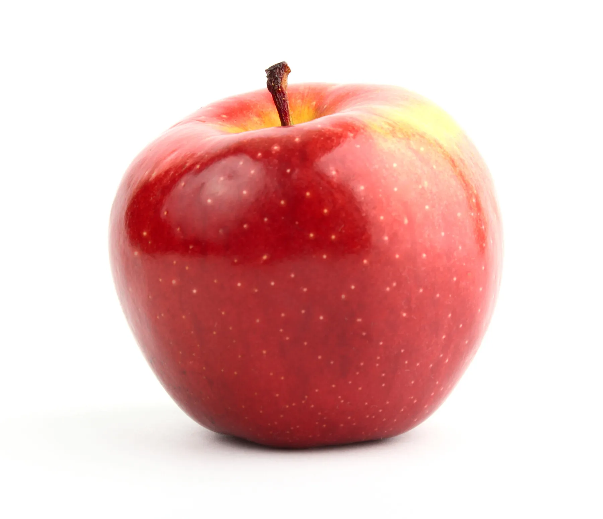

| Images | Nom | Description |
|---|---|---|
| Banane | La banane est le fruit ou la baie dérivant de l’inflorescence du bananier. | |
|  | Pomme | La pomme est un fruit comestible produit par un pommier. |
| Fraise | La fraise est un petit fruit rouge issu des fraisiers, espèces de plantes herbacées. | |
| Poire | La poire est le fruit à pépins comestible au goût doux et sucré. | |
| Framboise | La framboise est un fruit rouge issu du framboisier. |